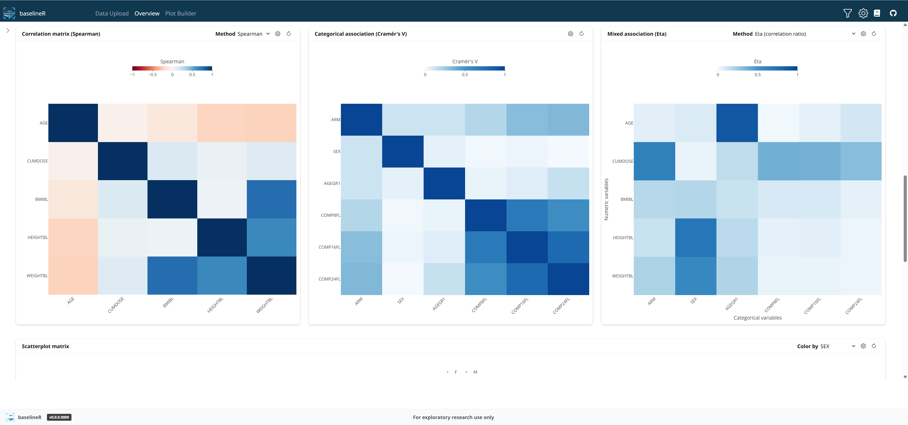

baselineR is an interactive DIG application designed to provide a comprehensive view of study baseline data before deeper analyses begin. It enables teams to quickly understand the composition of the study population and explore the characteristics that define participants at study start. Through intuitive visualizations such as histograms, bar charts, box plots, and correlation displays, users can assess data distributions and uncover noteworthy patterns across variables. The app helps reveal potential data quality concerns, making it easier to identify unexpected values, inconsistencies, or other findings that may warrant further review. Integrated missing-data visualizations highlight gaps in the dataset and support a more complete understanding of data readiness. By exploring relationships between variables, users can detect meaningful associations and generate early insights that may influence subsequent analyses. The combination of summary metrics and interactive graphics allows important trends, outliers, and unusual observations to surface naturally. With baselineR, study teams can build confidence in their data and establish a solid foundation for informed decision-making throughout the analytical process.